library(arrow) # Data import
library(dplyr) # Data manipulation
library(sf) # Spatial
library(ggplot2) # Data visualization
library(mgcv) # GAM fitting
library(gratia) # GAM visualization
theme_set(theme_minimal())5 Initial GAM exploration
Secor et al. (2025) provided a simple generalized additive model (GAM) evaluated in R (R Core Team 2026) for the analysis of marine fauna flyways. In the manuscript, the average latitude per individual, per week of a Hudson River population of striped bass Morone saxatilis, possibly the entire population of North Atlantic right whale Eubalaena glacialis, and several populations of northern gannet Morus bassanus were regressed against date. We reproduce that analysis here for an expanded data set of striped bass locations which includes Potomac and Delaware populations as well as for tagged sand tiger sharks Carcharias taurus. We do not report on Atlantic sturgeon here as the data set has not been fully-compiled as of 2026-04-30.
We will use the following packages:
5.1 Striped bass Morone saxatilis
We first visualize the distribution of the median per-individual latitudes through time:
ggplot(sb) +
geom_point(aes(x = wk, y = med_lat, color = group), alpha = 0.4) +
facet_wrap(~year) +
labs(x = "Week of year", y = "Weekly median latitude") +
theme(axis.title = element_text(size = 12))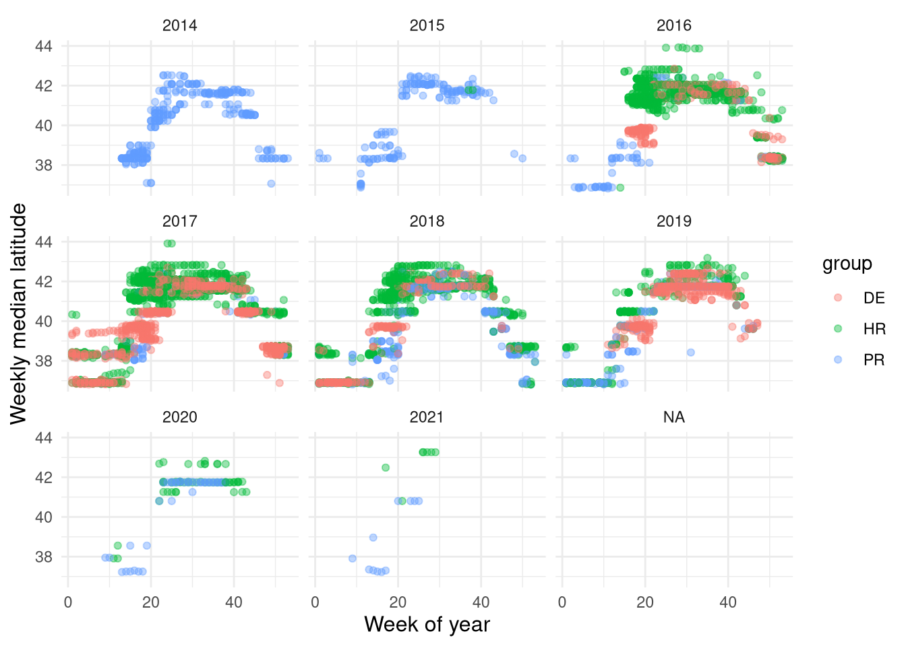
Following our projectiong selection procedure in the Projection Error chapter, we project the data into an azimuthal equidistant projection (AEQD) and rotate the data to “migration north”. To project into AEQD, we first need a projection center. This will be the median receiver location.
# A tibble: 1 × 2
lon0 lat0
<dbl> <dbl>
1 -73.9 40.6Create the PROJ string…
proj_string <- paste0(
"+proj=aeqd +lon_0=",
round(projection_center$lon0, 3),
" +lat_0=",
round(projection_center$lat0, 3)
)
proj_string[1] "+proj=aeqd +lon_0=-73.9 +lat_0=40.601"…and project the fish locations:
sb_sf <- sb |>
st_as_sf(coords = c("med_lon", "med_lat"), crs = 4326, remove = FALSE) |>
st_transform(proj_string)
sb_sf |>
distinct(med_lon, med_lat, .keep_all = TRUE) |>
ggplot() +
geom_sf() +
coord_sf(datum = proj_string)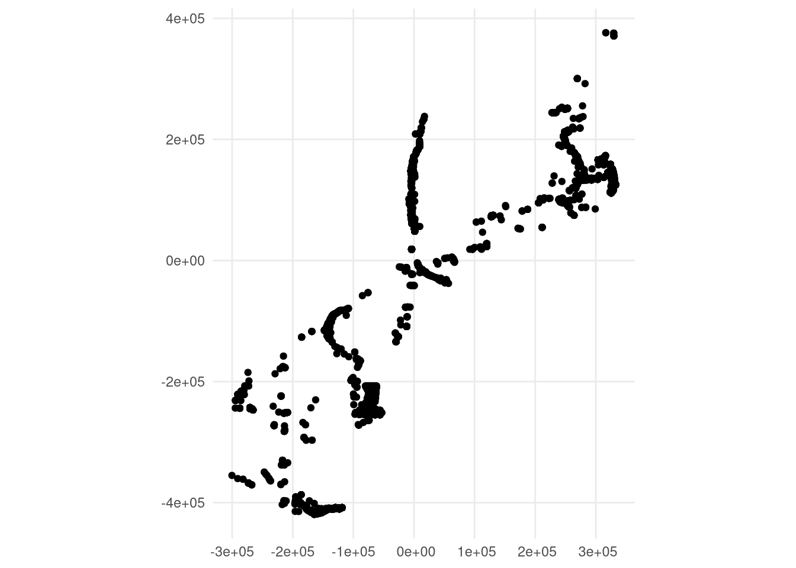
We now conduct principle components analysis (PCA) on the major migration vector to find its angle from true north: the migration azimuth.
migration_azimuth <- sb_sf |>
# Extract AEQD coordinates
st_coordinates() |>
# Run PCA
prcomp() |>
# Extract PCA loadings
_$rotation |>
# Transpose matrix
t() |>
# Find coordinates of a second location on the X axis.
# Here we use 1 km but it could be any value
(\(.) c(1e3, 0) %*% .)() |>
# Find the angle between true north and migration north
(\(.) atan2(.[1], .[2]) * 180 / pi)()
# Measure clockwise from north
migration_azimuth <- ifelse(
migration_azimuth < 0,
180 + migration_azimuth,
migration_azimuth
)So, the migration vector is rotated 43\(\degree\) from north. To rotate the data, we’re going to lie to the program and say that the data are currently projected around the north pole, then add the migration azimuth to it.
st_crs(sb_sf) <- "+proj=aeqd +lat_0=90 +lon_0=0"
proj_rotated <- paste0("+proj=aeqd +lat_0=90 +lon_0=", migration_azimuth)
sb_migration_north <- sb_sf |>
st_transform(proj_rotated) |>
# extract coordinates for modeling purposes
mutate(x = st_coordinates(geometry)[, 1], y = st_coordinates(geometry)[, 2])
ggplot(sb_migration_north) +
geom_sf() +
coord_sf(datum = proj_rotated)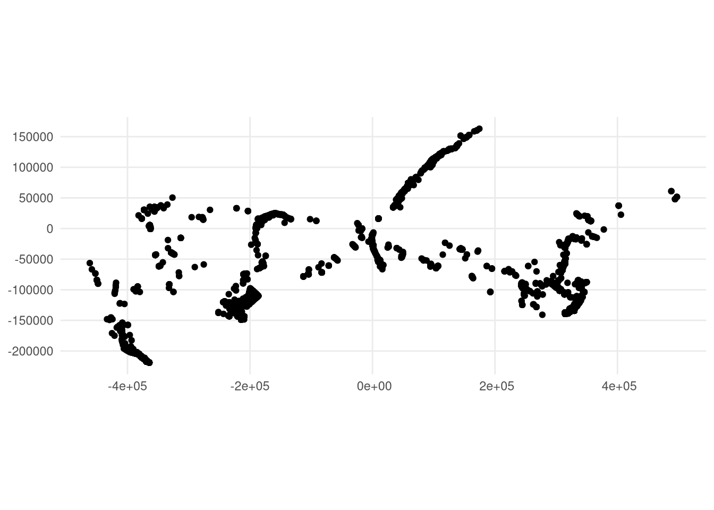
We can now visualize migration synchrony, the variance in the migration vector over time, and migration front, variance in excursion from the migration vector over time (Secor et al. 2025).
ggplot(sb_migration_north) +
geom_point(aes(x = wk, y = x, color = group), alpha = 0.4) +
facet_wrap(~year) +
labs(
title = "Migration synchrony",
x = "Week of year",
y = "Distance along the migration vector"
) +
theme(axis.title = element_text(size = 12))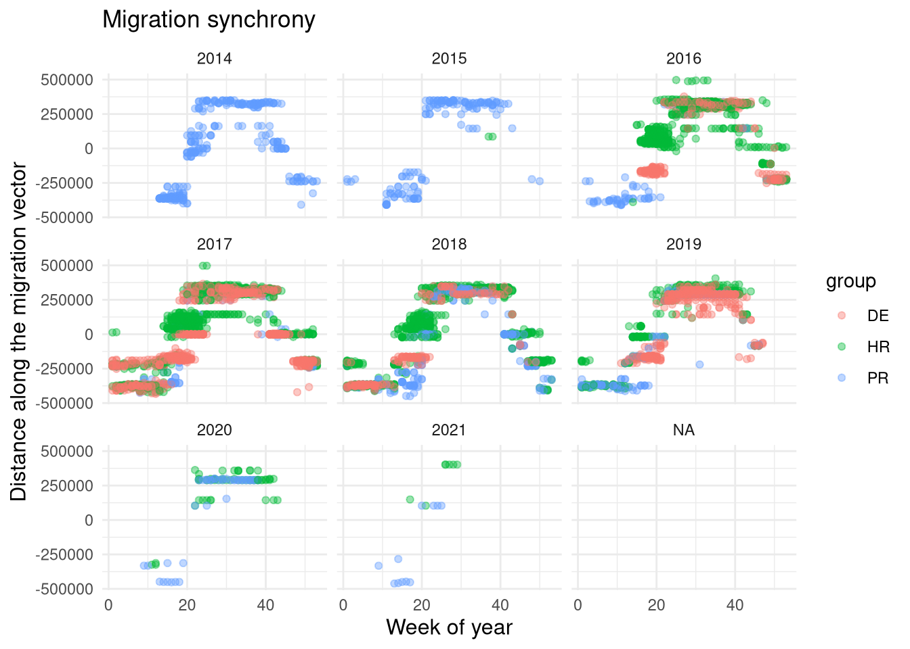
ggplot(sb_migration_north) +
geom_point(aes(x = wk, y = y, color = group), alpha = 0.4) +
facet_wrap(~year) +
labs(
title = "Migration front",
x = "Week of year",
y = "Distance across the migration vector"
) +
theme(axis.title = element_text(size = 12))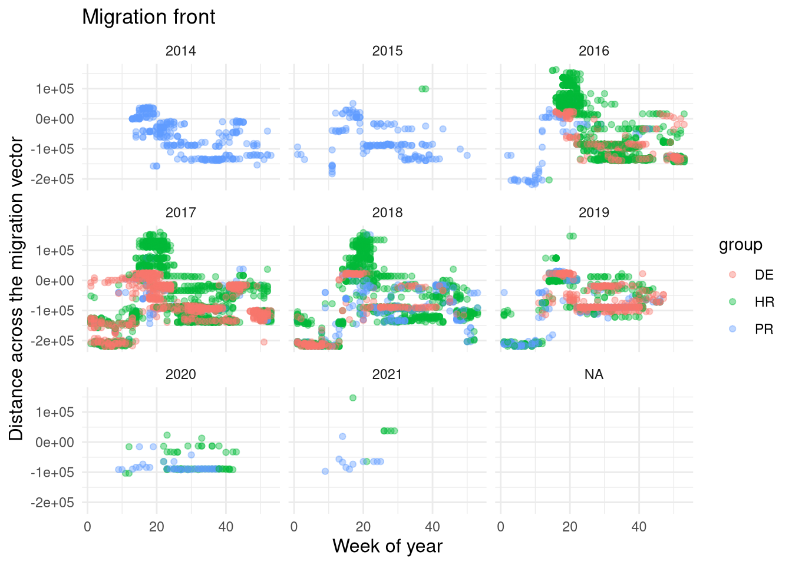
5.1.1 Initial GAM
5.1.1.1 Migration vector
For the initial GAM, we’ll treat both year and population as a random effect. We see a general trend of low values on the migration vector through the beginning of the year, a rapid increase after the 10th week, a slight reduction in rate in week 15-20, then another rapid increase through week 25. Posiiton then levels off through week 40, where it rapidly drops.
model_data <- sb_migration_north |>
mutate(group = factor(group), yr_f = factor(year))
m1 <- model_data |>
gam(
x ~ s(wk, k = 27, bs = "cc") + s(yr_f, bs = "re") + s(group, bs = "re"),
knots = list(wk = c(1, 53)),
data = _,
method = "REML"
)
summary(m1)
Family: gaussian
Link function: identity
Formula:
x ~ s(wk, k = 27, bs = "cc") + s(yr_f, bs = "re") + s(group,
bs = "re")
Parametric coefficients:
Estimate Std. Error t value Pr(>|t|)
(Intercept) 17025 25040 0.68 0.497
Approximate significance of smooth terms:
edf Ref.df F p-value
s(wk) 20.769 25 15255.3 <2e-16 ***
s(yr_f) 6.178 7 158.5 <2e-16 ***
s(group) 1.993 2 1481.8 <2e-16 ***
---
Signif. codes: 0 '***' 0.001 '**' 0.01 '*' 0.05 '.' 0.1 ' ' 1
R-sq.(adj) = 0.877 Deviance explained = 87.7%
-REML = 95557 Scale est. = 8.5288e+09 n = 7431draw(m1, select = "s(wk)", residuals = TRUE)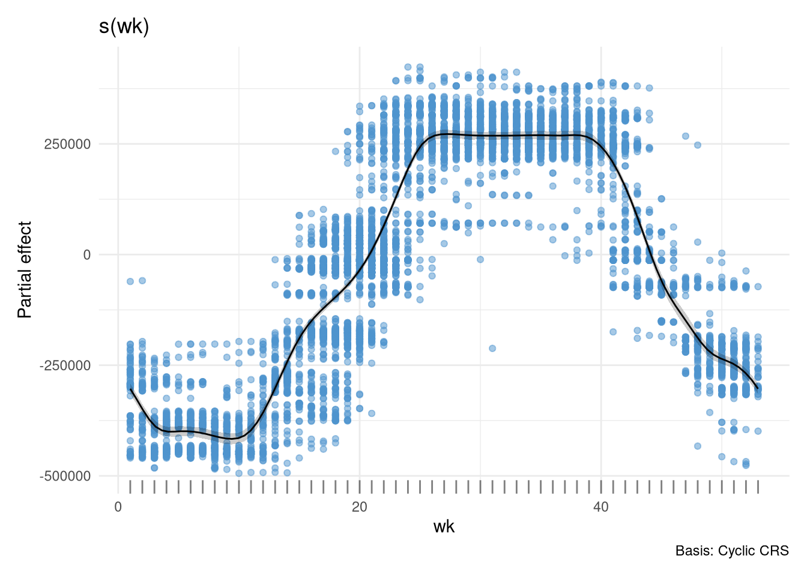
Next we’ll pull the populations apart and treat them as “by-variable smooths” (i.e. one form of a GAM interaction) in the model. We see that the leveling-off of movement up the migration vector in weeks 15-20 is likely due to spawning. The Potomac River has a leveling-off earlier and lower on the vector, followed by Delaware a little higher and later, then Hudson higher and greater still. These destination habitats are one of the migration metrics we wish to quantify.
m2 <- model_data |>
# rename "group" variable; we'll use the marginaleffects library soon and
# "group" makes the program confused
mutate(grp = group) |>
gam(
x ~ grp + s(wk, by = grp, k = 27, bs = "cc") + s(yr_f, bs = "re"),
knots = list(wk = c(1, 53)),
data = _,
method = "REML"
)
summary(m2)
Family: gaussian
Link function: identity
Formula:
x ~ grp + s(wk, by = grp, k = 27, bs = "cc") + s(yr_f, bs = "re")
Parametric coefficients:
Estimate Std. Error t value Pr(>|t|)
(Intercept) 69079 6060 11.40 <2e-16 ***
grpPR -84156 3061 -27.49 <2e-16 ***
grpDE -60662 2190 -27.70 <2e-16 ***
---
Signif. codes: 0 '***' 0.001 '**' 0.01 '*' 0.05 '.' 0.1 ' ' 1
Approximate significance of smooth terms:
edf Ref.df F p-value
s(wk):grpHR 22.729 25 3029.38 <2e-16 ***
s(wk):grpPR 18.788 25 714.35 <2e-16 ***
s(wk):grpDE 19.868 25 1838.71 <2e-16 ***
s(yr_f) 5.955 7 10.55 <2e-16 ***
---
Signif. codes: 0 '***' 0.001 '**' 0.01 '*' 0.05 '.' 0.1 ' ' 1
R-sq.(adj) = 0.912 Deviance explained = 91.3%
-REML = 94348 Scale est. = 6.0601e+09 n = 7431draw(m2, select = c("s(wk)"), partial_match = TRUE, residuals = TRUE)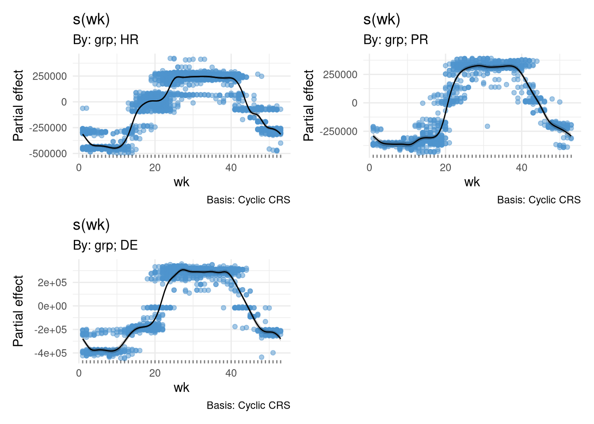
It’s a bit more interesting if these curves are overplotted. We’ll use the marginaleffects package to marginalize out random effects.
library(marginaleffects)
m2_preds <- predictions(
m2,
newdata = datagrid(wk = 1:53, grp = c("HR", "PR", "DE")),
condition = c("wk", "grp"),
exclude = "yr_f"
) |>
mutate(
system = case_when(
grepl("HR", grp) ~ "Hudson",
grepl("PR", grp) ~ "Potomac",
grepl("DE", grp) ~ "Delaware"
)
)
ggplot(m2_preds) +
geom_ribbon(
aes(x = wk, ymin = conf.low / 1000, ymax = conf.high / 1000, fill = system),
alpha = 0.5
) +
geom_line(aes(x = wk, y = estimate / 1000, color = system)) +
labs(
x = "Week",
y = "Kilometers along migration vector",
fill = "",
color = ""
) +
theme(
axis.text = element_text(size = 14),
axis.title = element_text(size = 18),
legend.text = element_text(size = 12),
legend.position = "inside",
legend.position.inside = c(0.65, 0.25)
)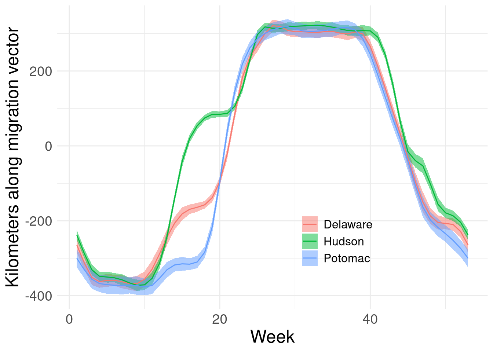
5.1.1.1.1 Derivatives
m2_d <- derivatives(m2, select = "s(wk)", partial_match = T, n = 52) |>
mutate(
system = case_when(
grepl("HR", .smooth) ~ "Hudson",
grepl("PR", .smooth) ~ "Potomac",
grepl("DE", .smooth) ~ "Delaware"
)
)
draw(m2_d)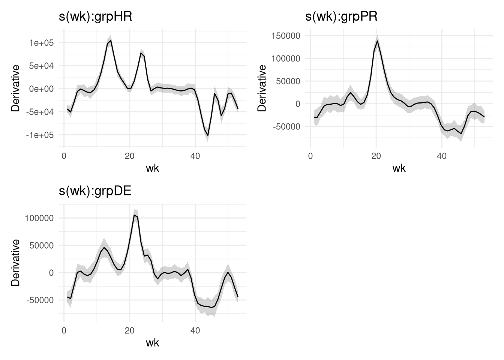
m2_d |>
ggplot() +
geom_ribbon(
aes(
x = wk,
ymin = .lower_ci / 1000,
ymax = .upper_ci / 1000,
fill = system
),
alpha = 0.5
) +
geom_line(aes(x = wk, y = .derivative / 1000, color = system)) +
labs(
x = "Week",
y = "Migration velocity (km/week)",
fill = "System",
color = "System"
) +
theme(
axis.text = element_text(size = 14),
axis.title = element_text(size = 18),
legend.text = element_text(size = 12),
legend.title = element_text(size = 12),
legend.position = "inside",
legend.position.inside = c(0.7, 0.7)
)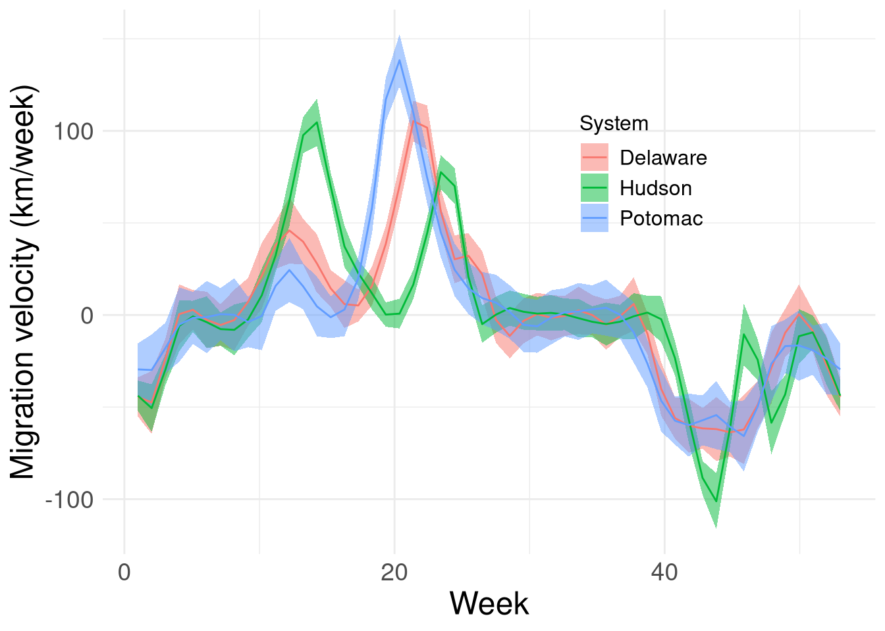
What might a migration metric look like? If we define a “destination habitat” as a time when \(d/d(wk) \approx 0\), here are the locations where Hudson River fish might at their destination habitat:
hr_dest_hab <- m2_d |>
group_by(grp) |>
mutate(
zero = (.lower_ci <= 0 & .upper_ci >= 0),
id = consecutive_id(zero)
) |>
filter(id != 1, grp == "HR") |>
distinct(zero, id, .keep_all = TRUE) |>
mutate(id = rep(1:(n() / 2), each = 2)) |>
tidyr::pivot_wider(id_cols = id, names_from = zero, values_from = wk)
draw(m2_d, select = "s(wk):grpHR") +
annotate(
"rect",
xmin = hr_dest_hab$`TRUE`,
xmax = hr_dest_hab$`FALSE`,
ymin = -1e5,
ymax = 1e5,
alpha = 0.2
)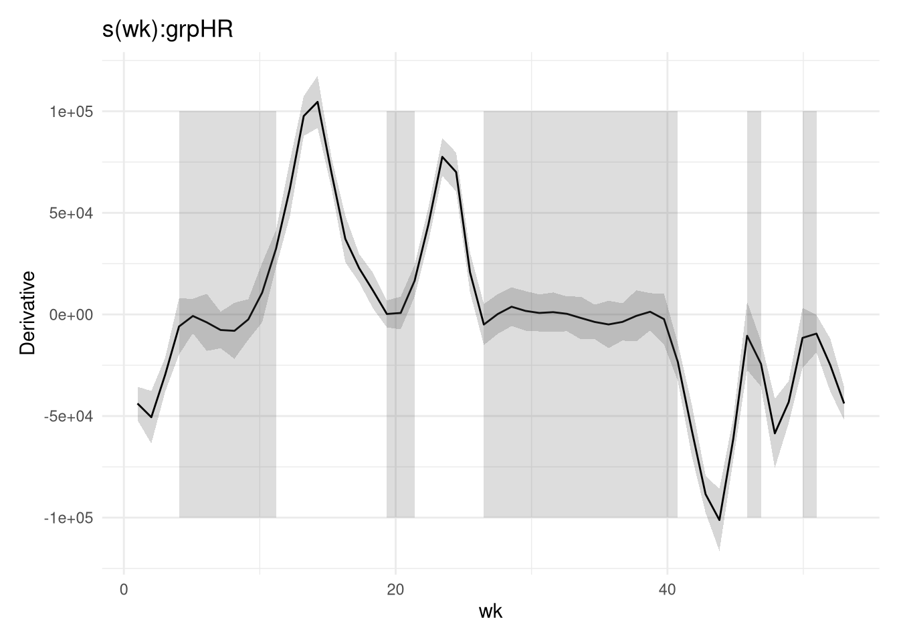
5.1.1.2 Migration front
We’ll do the same with the migration front (the deviation from the migration vector).
m1_mf <- model_data |>
gam(
y ~ s(wk, k = 53, bs = "cc") +
s(yr_f, bs = "re") +
s(group, bs = "re"),
knots = list(wk = c(1, 53)),
data = _,
method = "REML"
)
summary(m1_mf)
Family: gaussian
Link function: identity
Formula:
y ~ s(wk, k = 53, bs = "cc") + s(yr_f, bs = "re") + s(group,
bs = "re")
Parametric coefficients:
Estimate Std. Error t value Pr(>|t|)
(Intercept) -72156 6320 -11.42 <2e-16 ***
---
Signif. codes: 0 '***' 0.001 '**' 0.01 '*' 0.05 '.' 0.1 ' ' 1
Approximate significance of smooth terms:
edf Ref.df F p-value
s(wk) 33.092 51 453.850 < 2e-16 ***
s(yr_f) 4.196 7 8.519 0.00756 **
s(group) 1.975 2 172.258 < 2e-16 ***
---
Signif. codes: 0 '***' 0.001 '**' 0.01 '*' 0.05 '.' 0.1 ' ' 1
R-sq.(adj) = 0.722 Deviance explained = 72.3%
-REML = 90614 Scale est. = 2.2479e+09 n = 7431draw(m1_mf, select = "s(wk)", residuals = TRUE)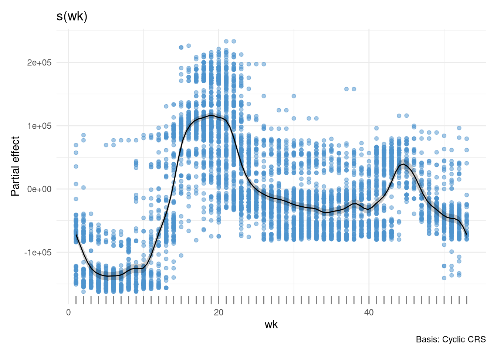
m2_mf <- model_data |>
mutate(grp = group) |>
gam(
y ~ grp +
s(wk, by = grp, k = 53, bs = "cc") +
s(yr_f, bs = "re"),
knots = list(wk = c(1, 53)),
data = _,
method = "REML"
)
summary(m2_mf)
Family: gaussian
Link function: identity
Formula:
y ~ grp + s(wk, by = grp, k = 53, bs = "cc") + s(yr_f, bs = "re")
Parametric coefficients:
Estimate Std. Error t value Pr(>|t|)
(Intercept) -57394 2554 -22.47 <2e-16 ***
grpPR -24870 1626 -15.29 <2e-16 ***
grpDE -18397 1176 -15.64 <2e-16 ***
---
Signif. codes: 0 '***' 0.001 '**' 0.01 '*' 0.05 '.' 0.1 ' ' 1
Approximate significance of smooth terms:
edf Ref.df F p-value
s(wk):grpHR 34.047 51 535.43 <2e-16 ***
s(wk):grpPR 19.893 51 49.60 <2e-16 ***
s(wk):grpDE 22.237 51 100.04 <2e-16 ***
s(yr_f) 5.518 7 13.63 <2e-16 ***
---
Signif. codes: 0 '***' 0.001 '**' 0.01 '*' 0.05 '.' 0.1 ' ' 1
R-sq.(adj) = 0.783 Deviance explained = 78.6%
-REML = 89740 Scale est. = 1.75e+09 n = 7431draw(m2_mf, select = "s(wk)", partial_match = TRUE, residuals = TRUE)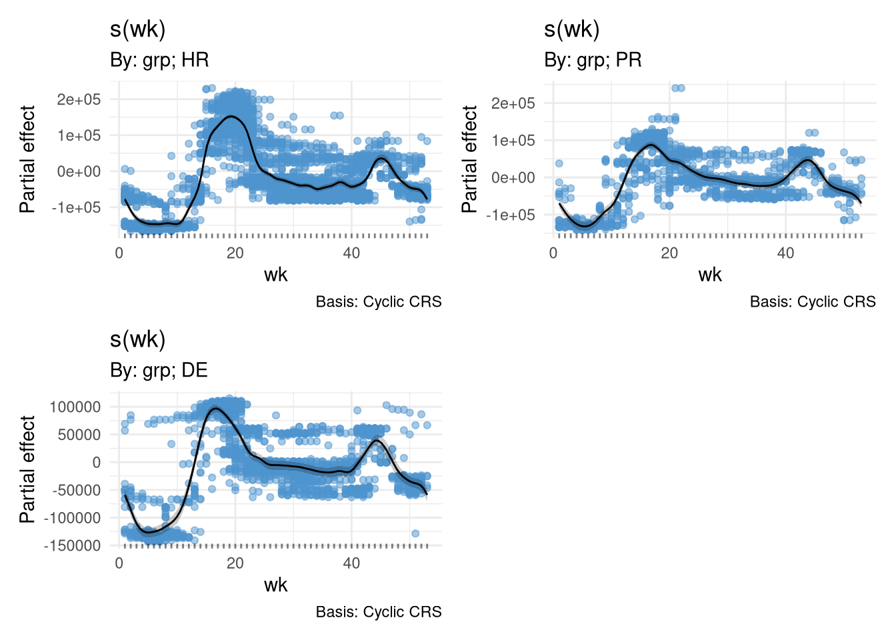
library(marginaleffects)
j <- predictions(
m2_mf,
newdata = datagrid(wk = 1:53, grp = c("HR", "PR", "DE")),
condition = c("wk", "grp"),
exclude = "yr_f"
)
j |>
mutate(
system = case_when(
grepl("HR", grp) ~ "Hudson",
grepl("PR", grp) ~ "Potomac",
grepl("DE", grp) ~ "Delaware"
)
) |>
ggplot() +
geom_ribbon(
aes(x = wk, ymin = conf.low / 1000, ymax = conf.high / 1000),
fill = "gray"
) +
geom_line(aes(x = wk, y = estimate / 1000)) +
labs(x = "Week", y = "Kilometers across migration vector") +
facet_wrap(~system, ncol = 2)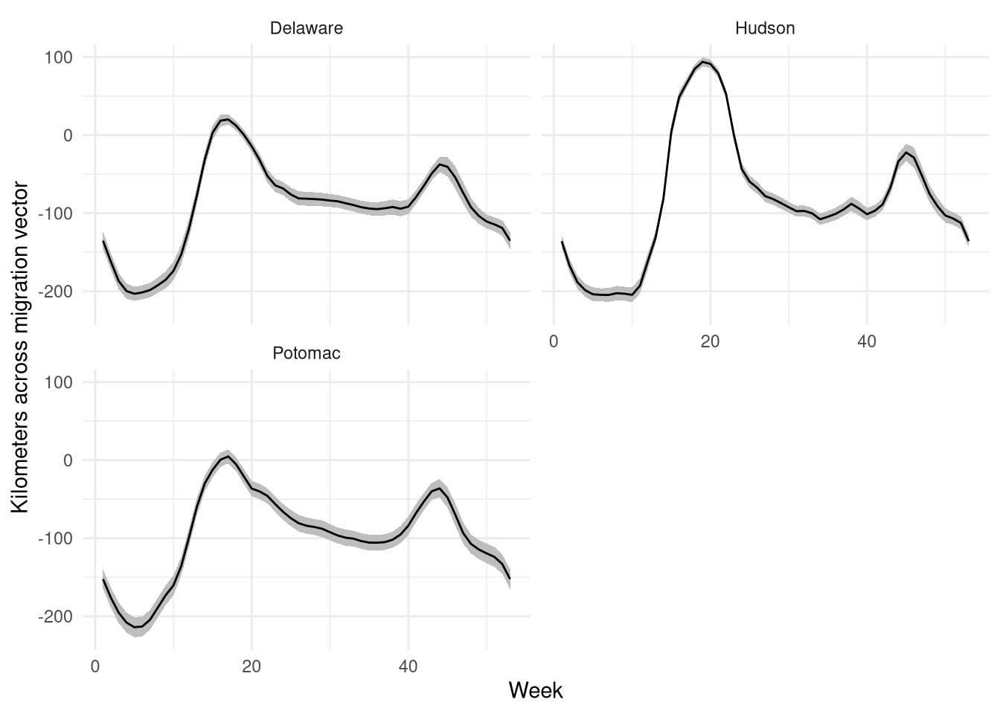
m2f_d <- derivatives(m2_mf, select = "s(wk)", partial_match = T, n = 53)
m2f_d |>
mutate(
system = case_when(
grepl("HR", .smooth) ~ "Hudson",
grepl("PR", .smooth) ~ "Potomac",
grepl("DE", .smooth) ~ "Delaware"
)
) |>
ggplot() +
geom_ribbon(
aes(x = wk, ymin = .lower_ci / 1000, ymax = .upper_ci / 1000),
fill = 'gray'
) +
geom_line(aes(x = wk, y = .derivative / 1000)) +
facet_wrap(~system, nrow = 2) +
labs(x = "Week", y = "Migration front velocity (km/week)")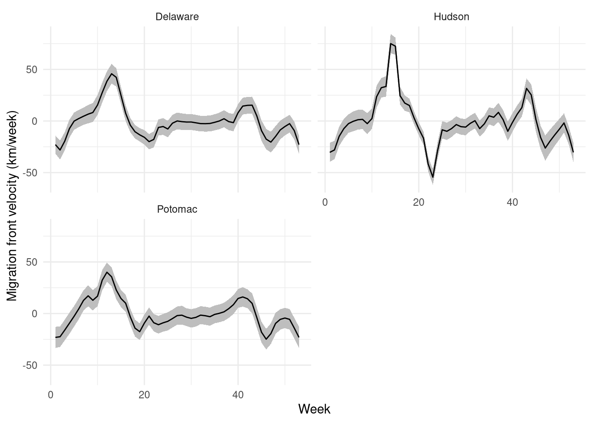
5.1.2 Model evaluation
It should be noted, however, that the initial models are not performing well on the edges of the domain of the migration vector and migration front. This suggests that we need to refine the model to further to characterize these areas.
appraise(m1)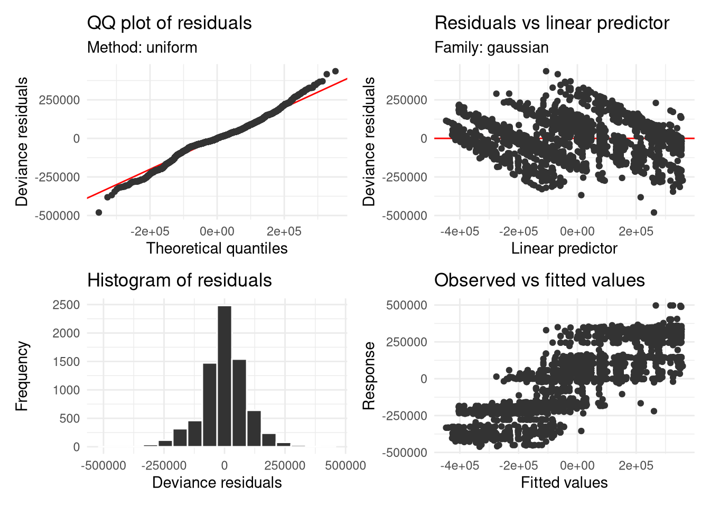
appraise(m2)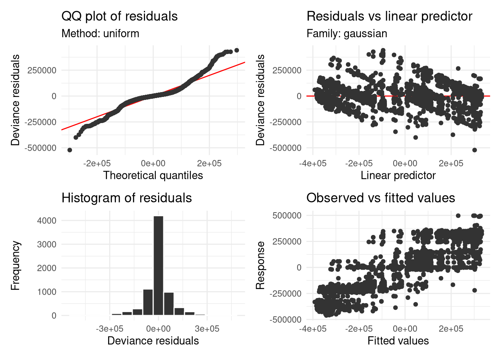
appraise(m1_mf)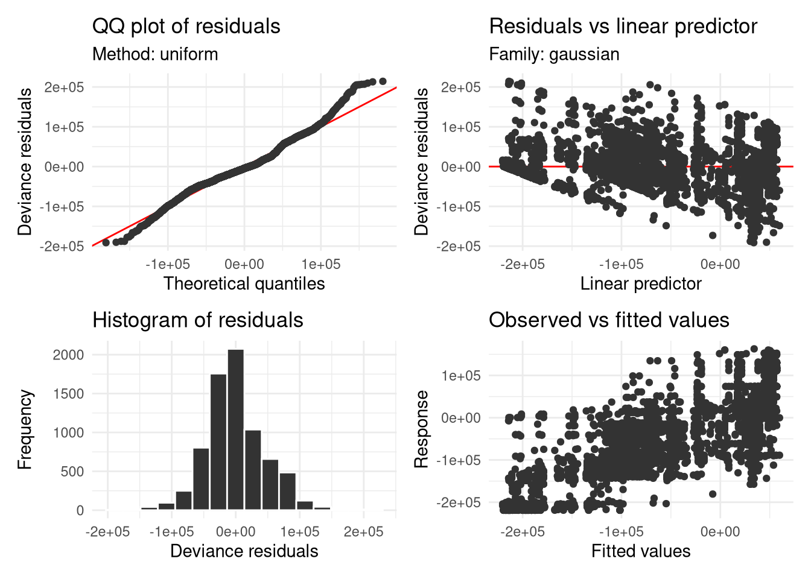
appraise(m2_mf)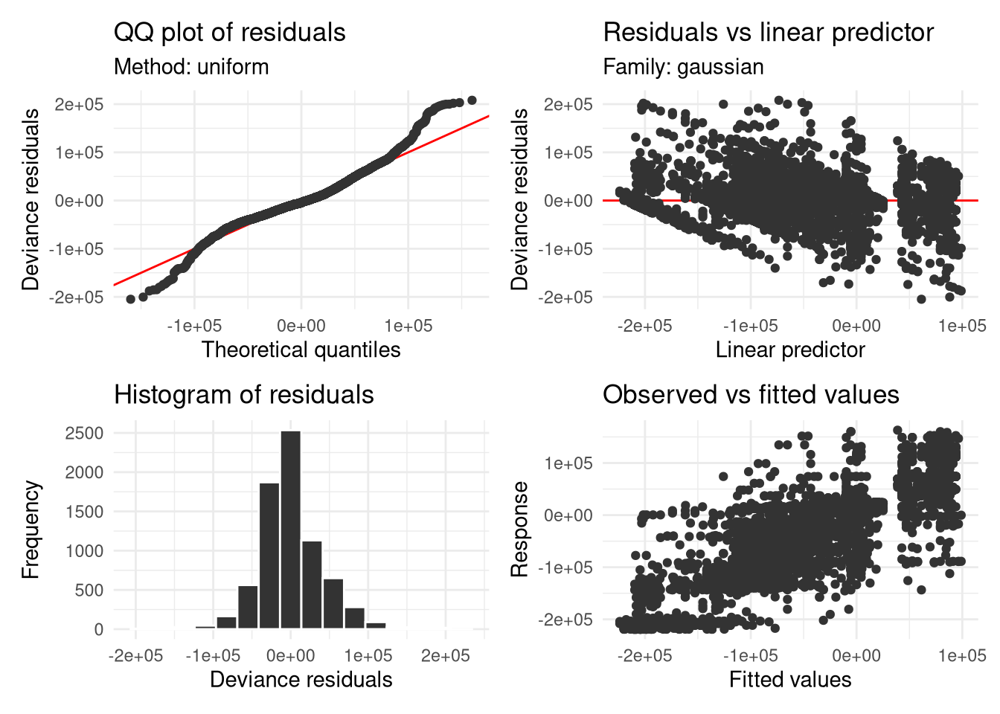
5.2 Sand tiger shark Carcharias taurus
sandtiger <- open_dataset("../data/RAW/sandtigers.csv", format = "csv") |>
mutate(
datetime = strptime(DateandTime, format = "%m/%d/%Y %H:%M", tz = "UTC"),
wk = week(datetime),
yr = year(datetime)
) |>
group_by(Transmitter, wk, yr) |>
summarize(
med_lon = median(Longitude, na.rm = TRUE),
med_lat = median(Latitude, na.rm = TRUE)
) |>
collect()ggplot(sandtiger) +
geom_point(aes(x = wk, y = med_lat), alpha = 0.4, color = "orange") +
facet_wrap(~yr) +
labs(x = "Week of year", y = "Weekly median latitude") +
theme(axis.title = element_text(size = 12))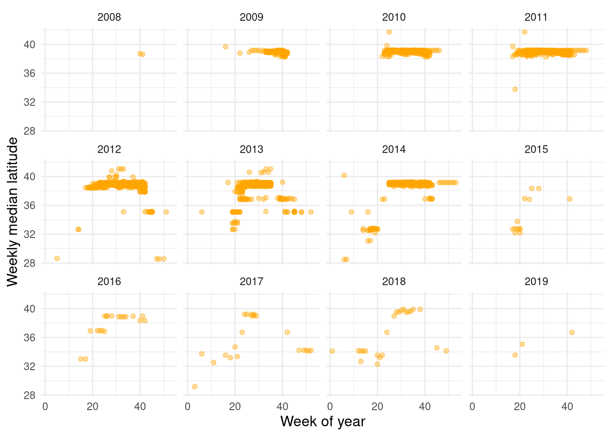
# A tibble: 1 × 2
lon0 lat0
<dbl> <dbl>
1 -75.1 38.7proj_string <- paste0(
"+proj=aeqd +lon_0=",
round(projection_center$lon0, 3),
" +lat_0=",
round(projection_center$lat0, 3)
)
proj_string[1] "+proj=aeqd +lon_0=-75.117 +lat_0=38.743"sandtiger_sf <- sandtiger |>
st_as_sf(coords = c("med_lon", "med_lat"), crs = 4326) |>
st_transform(proj_string)
sandtiger_sf |>
distinct(geometry) |>
ggplot() +
geom_sf() +
coord_sf(datum = proj_string)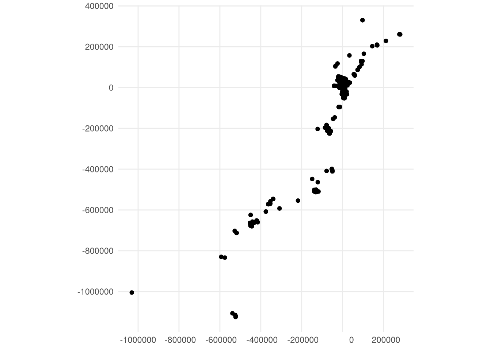
migration_azimuth <- sandtiger_sf |>
# Extract AEQD coordinates
st_coordinates() |>
# Run PCA
prcomp() |>
# Extract PCA loadings
_$rotation |>
# Transpose matrix
t() |>
# Find coordinates of a second location on the X axis.
# Here we use 1 km but it could be any value
(\(.) c(1e3, 0) %*% .)() |>
# Find the angle between true north and migration north
(\(.) atan2(.[1], .[2]) * 180 / pi)()
# Measure clockwise from north
migration_azimuth <- ifelse(
migration_azimuth < 0,
180 + migration_azimuth,
migration_azimuth
)
migration_azimuth[1] 25.09114st_crs(sandtiger_sf) <- "+proj=aeqd +lat_0=90 +lon_0=0"
proj_rotated <- paste0("+proj=aeqd +lat_0=90 +lon_0=", migration_azimuth)
sandtiger_migration_north <- sandtiger_sf |>
st_transform(proj_rotated) |>
# extract coordinates for modeling purposes
mutate(x = st_coordinates(geometry)[, 1], y = st_coordinates(geometry)[, 2])
ggplot(sandtiger_migration_north) +
geom_sf() +
coord_sf(datum = proj_rotated)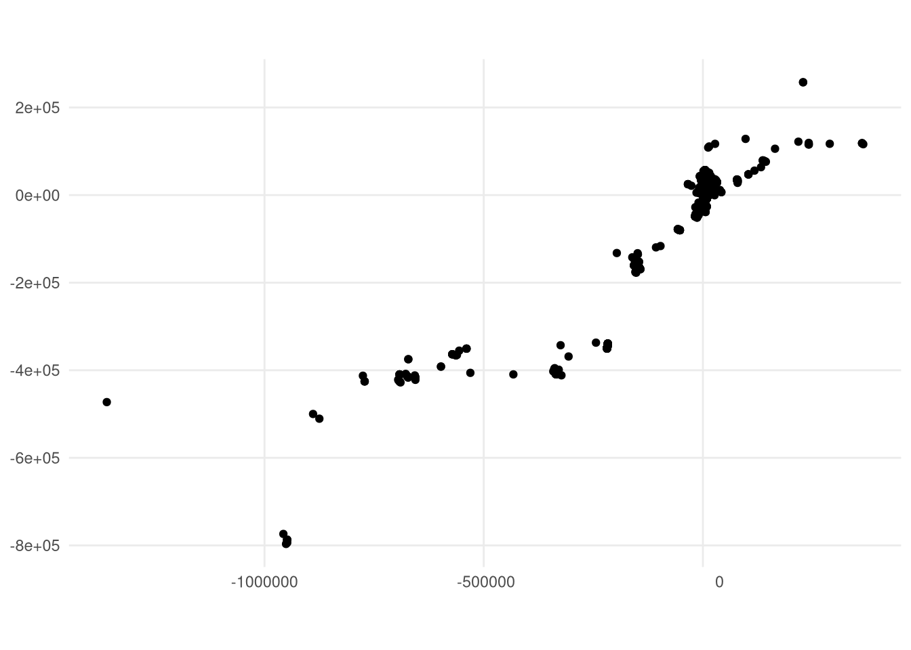
ggplot(sandtiger_migration_north) +
geom_point(aes(x = wk, y = x), alpha = 0.4, color = "orange") +
facet_wrap(~yr) +
labs(
title = "Migration synchrony",
x = "Week of year",
y = "Distance along the migration vector"
) +
theme(axis.title = element_text(size = 12))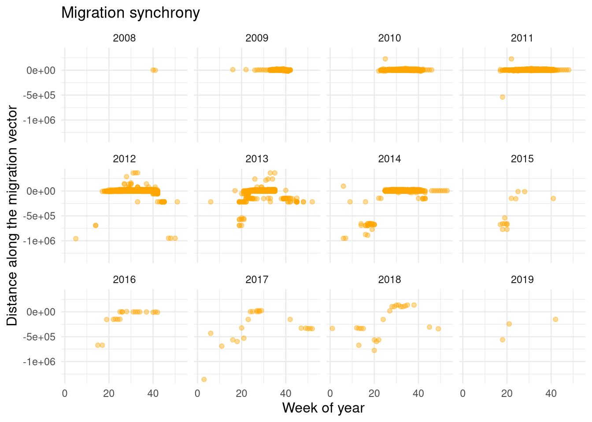
ggplot(sandtiger_migration_north) +
geom_point(aes(x = wk, y = y, color = group), alpha = 0.4, color = "orange") +
facet_wrap(~yr) +
labs(
title = "Migration front",
x = "Week of year",
y = "Distance across the migration vector"
) +
theme(axis.title = element_text(size = 12))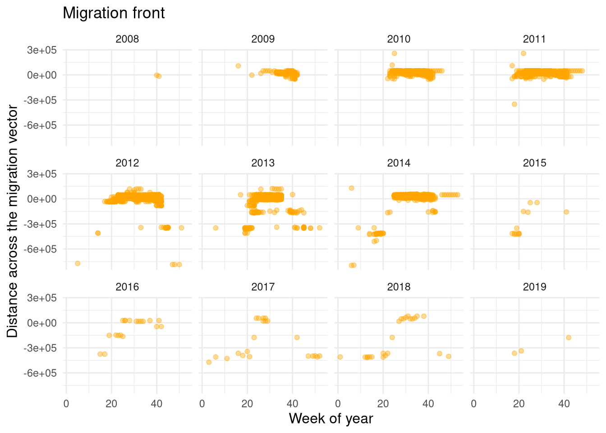
5.2.1 Initial GAM
5.2.1.1 Migration vector
model_data <- sandtiger_migration_north |>
mutate(yr_f = factor(yr))
m1_st <- model_data |>
gam(
x ~ s(wk, k = 27, bs = "cc") + s(yr_f, bs = "re"),
knots = list(wk = c(1, 53)),
data = _,
method = "REML"
)
summary(m1_st)
Family: gaussian
Link function: identity
Formula:
x ~ s(wk, k = 27, bs = "cc") + s(yr_f, bs = "re")
Parametric coefficients:
Estimate Std. Error t value Pr(>|t|)
(Intercept) -55238 24765 -2.23 0.0258 *
---
Signif. codes: 0 '***' 0.001 '**' 0.01 '*' 0.05 '.' 0.1 ' ' 1
Approximate significance of smooth terms:
edf Ref.df F p-value
s(wk) 24.01 25 4328.15 <2e-16 ***
s(yr_f) 10.64 11 43.91 <2e-16 ***
---
Signif. codes: 0 '***' 0.001 '**' 0.01 '*' 0.05 '.' 0.1 ' ' 1
R-sq.(adj) = 0.574 Deviance explained = 57.7%
-REML = 71046 Scale est. = 2.9382e+09 n = 5759draw(m1_st, select = "s(wk)", residuals = TRUE)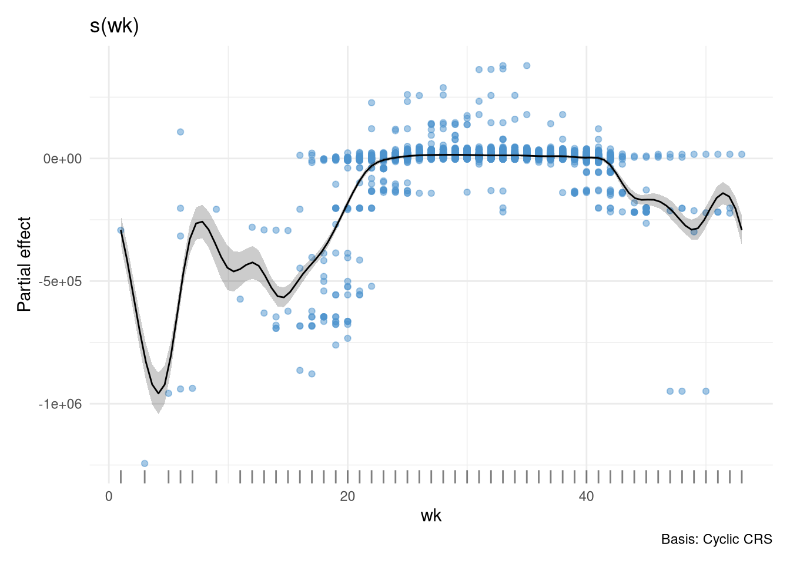
m2_st <- model_data |>
gam(
x ~ yr_f + s(wk, by = yr_f, k = 27, bs = "cc"),
knots = list(wk = c(1, 53)),
data = _,
method = "REML"
)
summary(m2_st)
Family: gaussian
Link function: identity
Formula:
x ~ yr_f + s(wk, by = yr_f, k = 27, bs = "cc")
Parametric coefficients:
Estimate Std. Error t value Pr(>|t|)
(Intercept) 5240.0 1973.3 2.655 0.00794 **
yr_f2011 -323.4 2166.4 -0.149 0.88135
yr_f2013 -42483.4 3112.9 -13.648 < 2e-16 ***
yr_f2014 -20455.5 2331.5 -8.773 < 2e-16 ***
yr_f2012 -5510.1 2157.1 -2.554 0.01066 *
yr_f2010 275.6 2211.8 0.125 0.90084
yr_f2008 -3930.5 27044.3 -0.145 0.88445
yr_f2015 -122132.2 262896.9 -0.465 0.64226
yr_f2018 41993.8 15893.0 2.642 0.00826 **
yr_f2017 51715.5 452208.5 0.114 0.90895
yr_f2019 74446.3 219252.5 0.340 0.73421
yr_f2016 -25221.3 11448.8 -2.203 0.02764 *
---
Signif. codes: 0 '***' 0.001 '**' 0.01 '*' 0.05 '.' 0.1 ' ' 1
Approximate significance of smooth terms:
edf Ref.df F p-value
s(wk):yr_f2009 0.035900 14 0.000 0.935040
s(wk):yr_f2011 6.509983 20 1.297 0.000109 ***
s(wk):yr_f2013 18.143007 21 215.469 < 2e-16 ***
s(wk):yr_f2014 24.356296 25 599.665 < 2e-16 ***
s(wk):yr_f2012 20.902287 23 268.430 < 2e-16 ***
s(wk):yr_f2010 0.101669 16 0.005 0.432620
s(wk):yr_f2008 0.004441 4 0.000 0.896269
s(wk):yr_f2015 6.471028 8 147.124 < 2e-16 ***
s(wk):yr_f2018 13.014422 19 118.191 < 2e-16 ***
s(wk):yr_f2017 15.675747 18 141.660 < 2e-16 ***
s(wk):yr_f2019 1.962773 3 34.595 < 2e-16 ***
s(wk):yr_f2016 11.258569 16 54.145 < 2e-16 ***
---
Signif. codes: 0 '***' 0.001 '**' 0.01 '*' 0.05 '.' 0.1 ' ' 1
R-sq.(adj) = 0.874 Deviance explained = 87.7%
-REML = 67705 Scale est. = 8.7016e+08 n = 5759draw(m2_st, select = c("s(wk)"), partial_match = TRUE, residuals = TRUE)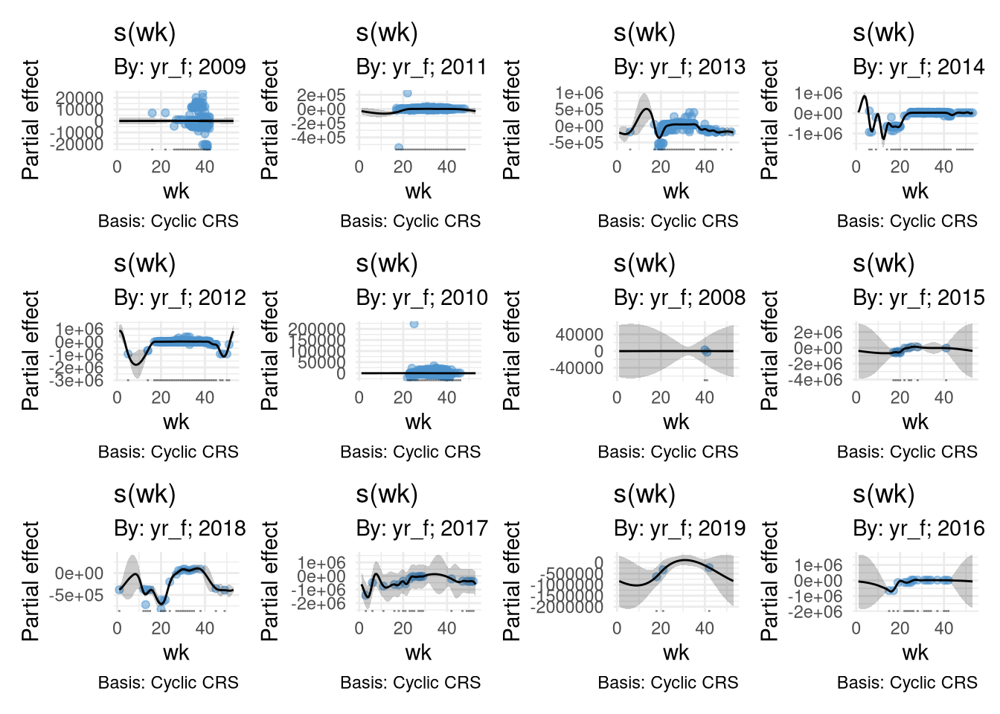
5.2.1.2 Migration front
We’ll do the same with the migration front (the deviation from the migration vector).
m1_mf <- model_data |>
gam(
y ~ s(wk, k = 27, bs = "cc") + s(yr_f, bs = "re"),
knots = list(wk = c(1, 53)),
data = _,
method = "REML"
)
summary(m1_mf)
Family: gaussian
Link function: identity
Formula:
y ~ s(wk, k = 27, bs = "cc") + s(yr_f, bs = "re")
Parametric coefficients:
Estimate Std. Error t value Pr(>|t|)
(Intercept) -29508 18803 -1.569 0.117
Approximate significance of smooth terms:
edf Ref.df F p-value
s(wk) 21.36 25 4166.20 <2e-16 ***
s(yr_f) 10.58 11 45.35 <2e-16 ***
---
Signif. codes: 0 '***' 0.001 '**' 0.01 '*' 0.05 '.' 0.1 ' ' 1
R-sq.(adj) = 0.598 Deviance explained = 60%
-REML = 69922 Scale est. = 2.0046e+09 n = 5759draw(m1_mf, select = "s(wk)", residuals = TRUE)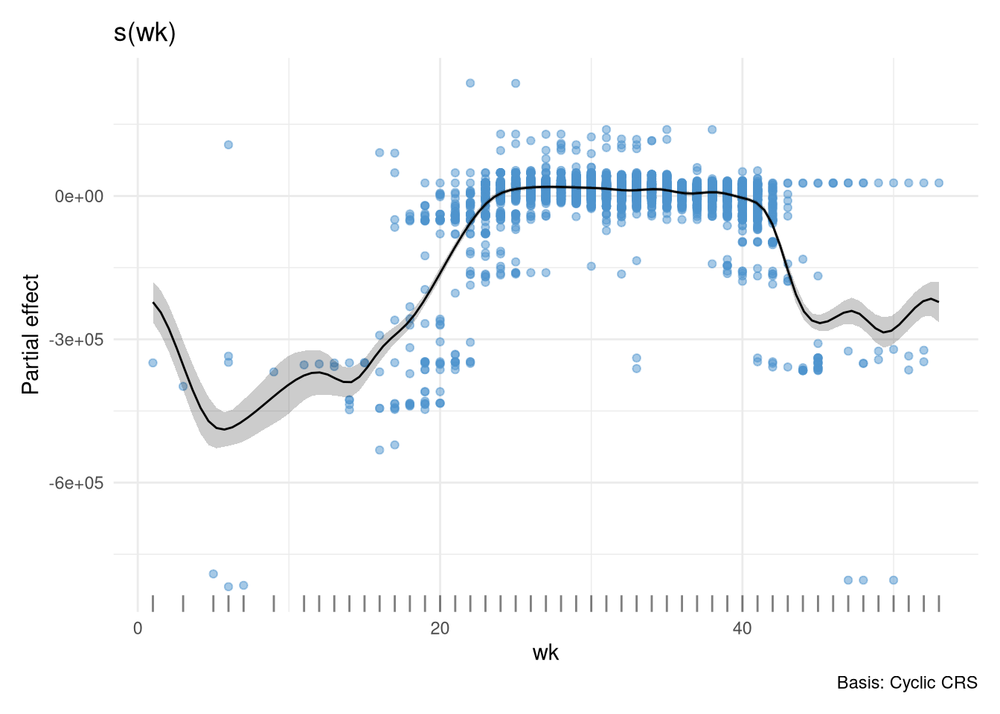
m2_mf <- model_data |>
gam(
y ~ yr_f + yr_f + s(wk, by = yr_f, k = 27, bs = "cc"),
knots = list(wk = c(1, 53)),
data = _,
method = "REML"
)
summary(m2_mf)
Family: gaussian
Link function: identity
Formula:
y ~ yr_f + yr_f + s(wk, by = yr_f, k = 27, bs = "cc")
Parametric coefficients:
Estimate Std. Error t value Pr(>|t|)
(Intercept) 29400.3 3670.8 8.009 1.39e-15 ***
yr_f2011 -3950.9 3760.8 -1.051 0.293511
yr_f2013 -56074.4 4318.4 -12.985 < 2e-16 ***
yr_f2014 -12464.6 3840.5 -3.246 0.001179 **
yr_f2012 -13522.3 3744.7 -3.611 0.000308 ***
yr_f2010 -197.7 3964.1 -0.050 0.960221
yr_f2008 -38696.8 33366.0 -1.160 0.246192
yr_f2015 -124466.7 82008.2 -1.518 0.129137
yr_f2018 -28916.5 10140.8 -2.852 0.004367 **
yr_f2017 -59552.2 74722.2 -0.797 0.425495
yr_f2019 -271982.0 45919.4 -5.923 3.35e-09 ***
yr_f2016 -32483.9 9275.8 -3.502 0.000465 ***
---
Signif. codes: 0 '***' 0.001 '**' 0.01 '*' 0.05 '.' 0.1 ' ' 1
Approximate significance of smooth terms:
edf Ref.df F p-value
s(wk):yr_f2009 2.70478 14 1.609 7.85e-06 ***
s(wk):yr_f2011 7.35612 20 5.227 < 2e-16 ***
s(wk):yr_f2013 18.67490 21 369.182 < 2e-16 ***
s(wk):yr_f2014 23.80832 25 356.018 < 2e-16 ***
s(wk):yr_f2012 20.52956 23 322.078 < 2e-16 ***
s(wk):yr_f2010 8.36066 16 4.588 < 2e-16 ***
s(wk):yr_f2008 0.01342 4 0.000 0.76
s(wk):yr_f2015 5.10557 8 47.384 < 2e-16 ***
s(wk):yr_f2018 9.47039 19 81.633 < 2e-16 ***
s(wk):yr_f2017 11.28886 18 66.331 < 2e-16 ***
s(wk):yr_f2019 1.37133 3 8.950 1.99e-07 ***
s(wk):yr_f2016 7.84273 16 23.450 < 2e-16 ***
---
Signif. codes: 0 '***' 0.001 '**' 0.01 '*' 0.05 '.' 0.1 ' ' 1
R-sq.(adj) = 0.855 Deviance explained = 85.8%
-REML = 67116 Scale est. = 7.2303e+08 n = 5759draw(m2_mf, select = "s(wk)", residuals = TRUE, partial_match = TRUE)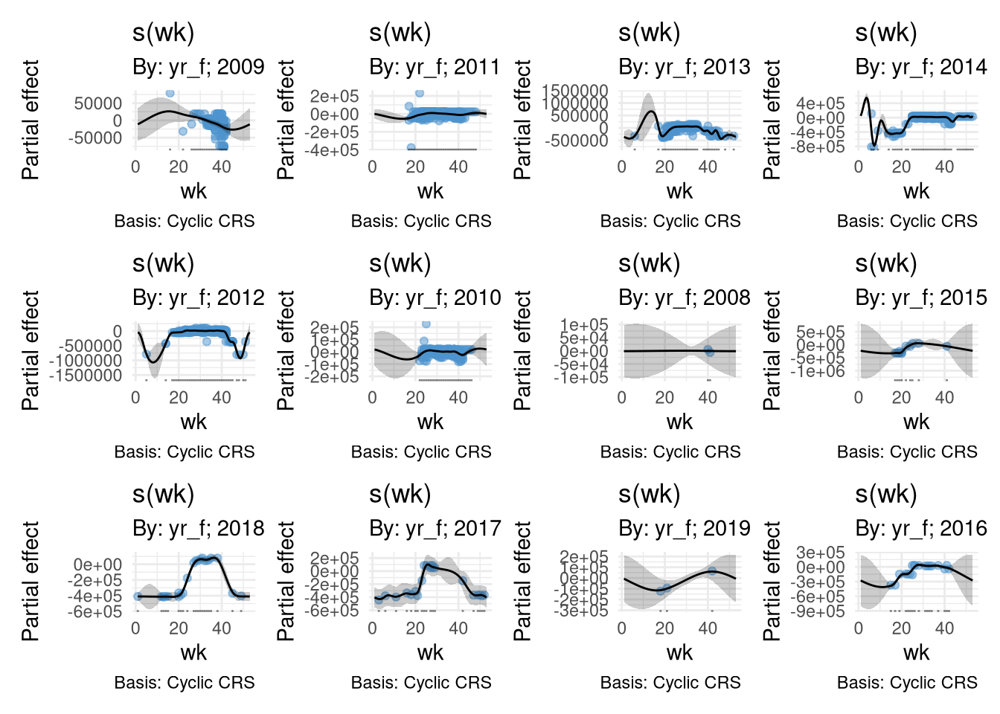
5.2.2 Model evaluation
appraise(m1_st)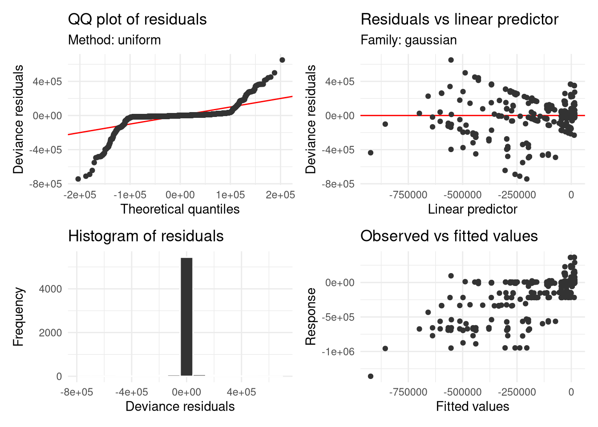
appraise(m2_st)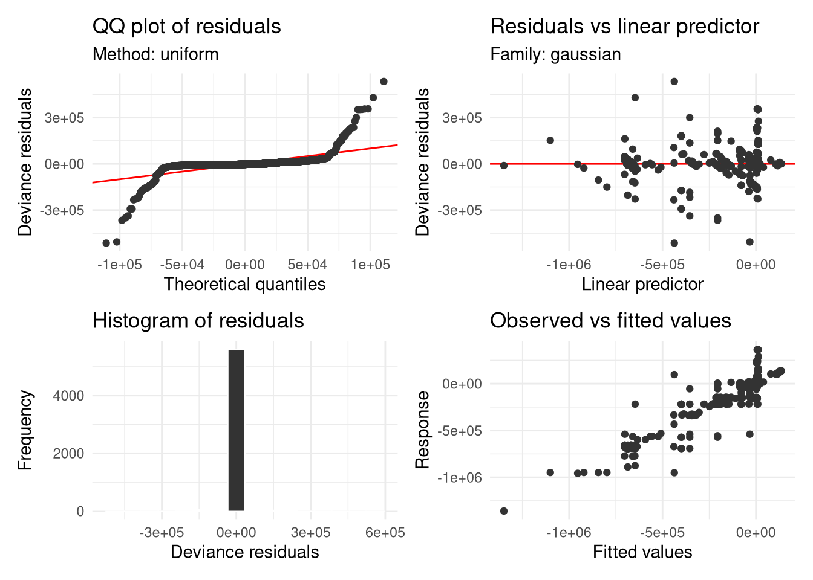
appraise(m1_mf)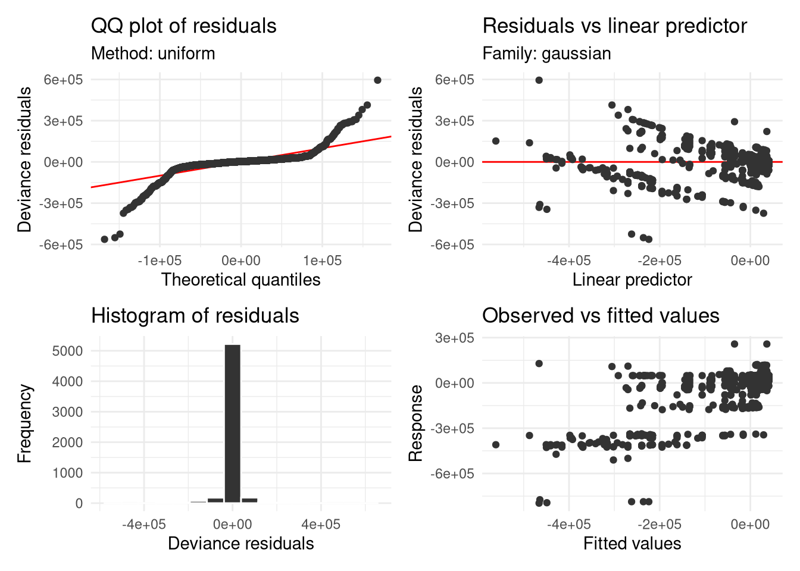
appraise(m2_mf)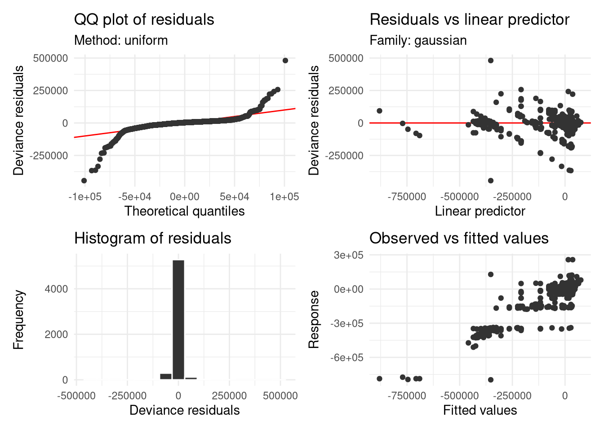